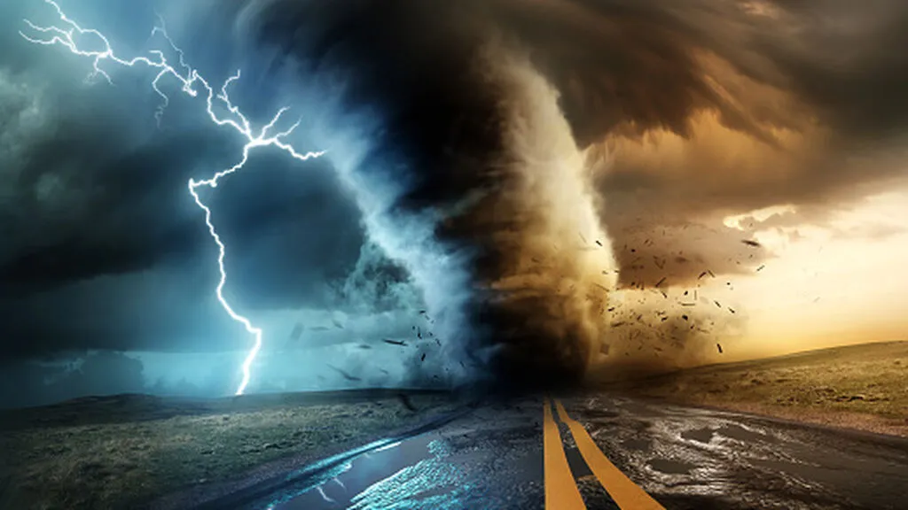

TORNADOS
Un tornado es uno de los fenómenos más severos y destructivos que se producen sobre la superficie de la tierra. Es una combinación de la fuerza del viento rotatorio que en ocasiones puede alcanzar los 500 km/h y la diferencia de presión que se generan en áreas muy localizadas. En la Argentina hay una mayor frecuencia entre octubre y marzo, comprendiendo la región formada por las provincias de Buenos Aires, Santa Fe, Entre Ríos, Corrientes, Chaco y el este de las provincias de Córdoba, La Pampa y Santiago del Estero.
La forma más familiar con la que identificamos un tornado a simple vista es la nube grande, oscura y rotante, pero a veces puede suceder que esa nube embudo sea invisible y puedas detectar el fenómeno mediante un remolino de objetos levantados o un sonido fuerte similar al de un tren de cargas o muchos camiones juntos aproximándose.
Tipos de Tornados
- Tornados Supercelulares
- Tornados no supercelulares.
- Tornado de vórtices múltiples.